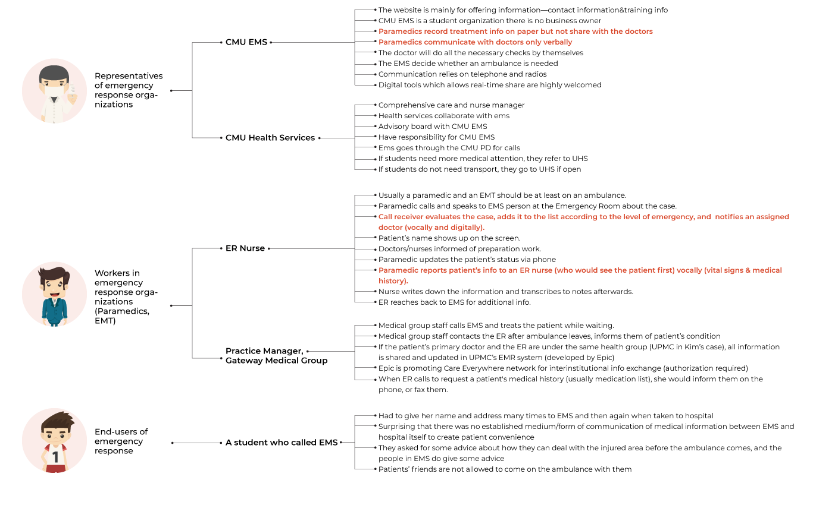
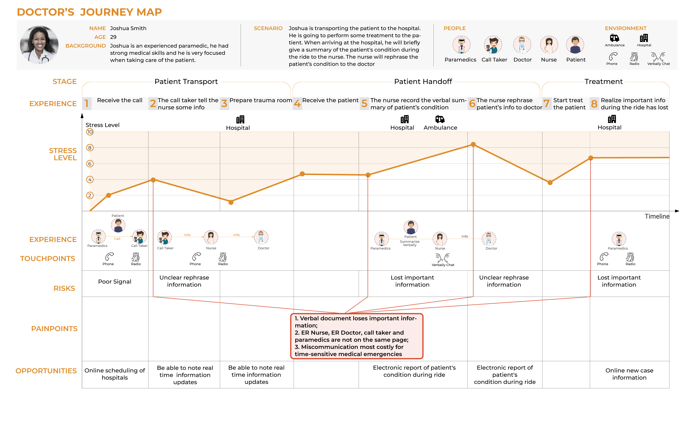
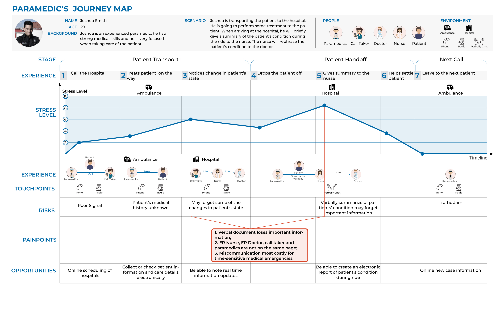
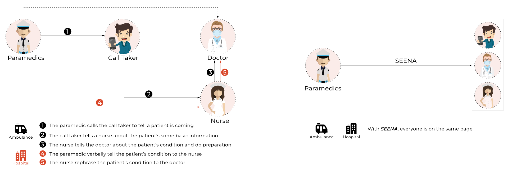
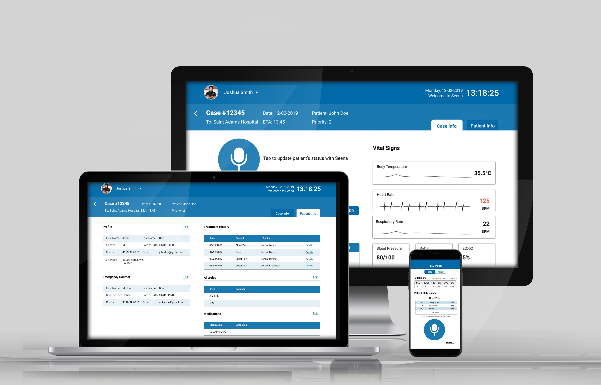

PROJECT SCOPE
We conducted our Guerilla research on the EMS area. We separated our interviewees into three categories: Representatives of emergency response organizations, Workers in emergency response organizations and End-users of emergency response. We conduct our guerrila research with several people in each catalog.We found that lack of communication between the doctor and paramedics is the main problem.

CUSTOMER JOURNEY MAPS
We created Customer Journey Maps to further identify the exact painpoint that both the User (Paramedics) and Service Providers (ER Doctors) had during the process


PROBLEM STATEMENT
ALatency, low efficiency, and miscommunication existed in current patient handling process, which mainly relies on verbal communication.
STORYBOARDS & SCENARIOS
We created 16 user scenarios and narrowed them down to 5 after team discussion. We made 8 storyboards out
of the 5 selected scenes and did the speed dating with IxD classmates and
outside testers. Each storyboard had its concerns and appeals. Finally, we were able to narrow down to
the one final storyboard that we thought had the most significant impact and realistic use case which
was “How might we collect all treatment information in one location?”
——John Raglin, PhD, Professor of Kinesiology at Indiana
University
Prototype
We designed a responsive web with voice recognition feature allowing for effective communication between the paramedics and doctors while avoiding information loss. The buttons are larger and background was cleaned up so that paramedics can interact with it even wearing bulky gloves and is in a high-stress environment. On the doctor's side, we made it very easy for the doctor to print out the final report and also have a very clean display to see all of the patients' current status and medical history in one view.
